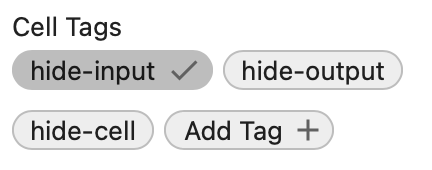

Jupyter¶
Le Jupyter notebook est un document JSON.
Il est composé de cellules d’entrée/sortie qui peuvent contenir
du code
du texte
des formules mathématiques
des graphiques.
Il se termine généralement par l’extension .ipynb.
Styles¶
Les styles italic bold et code peuvent être appliqués dans un texte.
Listes¶
Les listes avec plusieurs niveaux sont à éviter, car les sous-niveau s’affichent pas de la même façon dans un notebook et dans la page web généré avec l’outil jupyter-book.
Liste à puces
item
item
item
Liste numéroté
item
item
item
Texte littéral¶
Pour afficher un texte littéral il suffit d’indenter ses lignes.
# text littéral
x = 'hello'
print(x)
Commandes magiques¶
Les commandes magiques permettent d’appeler certaines commandes UNIX.
La commande pwd affiche le dossier actuel.
pwd
'/Users/raphael/GitHub/edunum/doc/misc'
La commande ls affiche les dossiers et fichiers.
ls *.ipynb
github.ipynb jupyter.ipynb style.ipynb thonny.ipynb
ll *.txt
-rw-r--r-- 1 virginie staff 22 Jan 17 13:12 demo.txt
La commande %save sauvegarde les lignes qui suivent dans un fichier.
%save hello.py
print('hello')
print('world')
File `hello.py` exists. Overwrite (y/[N])? y
'' was not found in history, as a file, url, nor in the user namespace.
hello
world
Hyper-liens¶
La commande
[notebook](https://jupyter-notebook.readthedocs.io)
insère un hyper-lien notebook
Formules mathématiques¶
Des expression en LaTeX peuvent être insérés dans le texte.
$a_2$pour un index \(a_2\)$a^2$pour un exposant \(a^2\)
Les accolades permettent le groupement de sous-expressions.
$a^{1+2}$pour un exposant \(a^{1+2}\)$\frac{2}{x+1}$pour une fraction \(\frac{2}{x+1}\)
Une formule LaTeX entourée par $$ apparait plus grande et centrée sur la page (display mode).
$$\sum_{i=0}^n {n} = 0 + 1 + 2 + ... + n$$
Exemple de code¶
Le code source (Python)
```python
for in range(3):
print(i)
```
produit
for in range(3):
print(i)
Le code source (C)
```c
for (i=0; i++, i<3)
{
print(i)
}
```
produit
for (i=0; i++, i<3)
{
print(i)
}
Tableau¶
Un tableau est centré avec des bandes alternés en Jupyter.
Il s’afficher plus aéré et aligné à gauche dans le site web.
| x | not x |
|-------|-------|
| False | True |
| True | False |
x |
not x |
|---|---|
False |
True |
True |
False |
Charger un fichier¶
Exécuter la commande %load hello.py ajoute le fichier dans la cellule et met la commande en commentaire.
# %load hello.py
print('hello')
print('world')
Exécuter un fichier¶
La commande %run permet d’exécuter un fichier externe et afficher son résultat dans la cellule suivante.
%run hello.py
hello
world
Code HTML¶
La commande %%html permet d’interpreter du code HTML et d’afficher son résultat dans la cellule suivante.
%%html
<h2>Titre 2</h2>
Texte en <b>gras</b> et <i>italique</i>.
Titre 2
Texte en gras et italique.Ecrire dans un fichier¶
La commande %%file permet d’écrire les lignes de texte qui suivent dans un fichier.
%%file demo.txt
some text
Overwriting demo.txt
Vérifions si le fichier texte existe.
ls *.txt
demo.txt
Avec l’option -a (append) nous pouvons ajouter des lignes de texte à un fichier existant.
%%file -a demo.txt
append text
Appending to demo.txt
Affichons le nouveau contenu.
cat demo.txt
some text
append text
Widgets¶
Les widgets n’apparaissent pas dans ce Jupyter notebook, mais ils apparaissent dans le document HTML. Par contre le document HTML est statique et n’a pas de serveur Python.
from ipywidgets import interact, interactive, fixed, interact_manual
import ipywidgets as widgets
widgets.IntSlider()
def f(x):
return x
interact(f, x=10);
10
Les tags d’une cellule¶
Ces tags peuvent être ajouté aux méta-données d’une cellule.
fill-width
output-scroll
margin
hide-input
hide-output
hide-cell
remove-input
remove-output
remove-cell
Le résultat n’est pas visible dans le Jupyter notebook, seulement dans la page HTML.
Cacher l’entrée¶
Pour cacher l’entrée de la cellule (input), ajoutez le tag hide-input.
Dans Jupyter Lab il faut
choisir la cellule
ouvrir Property Inspector (icône avec deux rouages à droite en haut)
cliquer sur un cell tag existant ou ajouter un nouveau tag

Pour afficher l’entrée de la cellule cliquz sur Afficher (+).
for i in range(3):
print(i)
0
1
2
Cacher l’entrée¶
Pour cacher la sortie de la cellule (output), ajoutez le tag hide-output.
for i in range(3):
print(i)
0
1
2
Cacher la cellule¶
Pour cacher la cellule entière (input+output), ajoutez le tag hide-cell.
for i in range(3):
print(i)
0
1
2